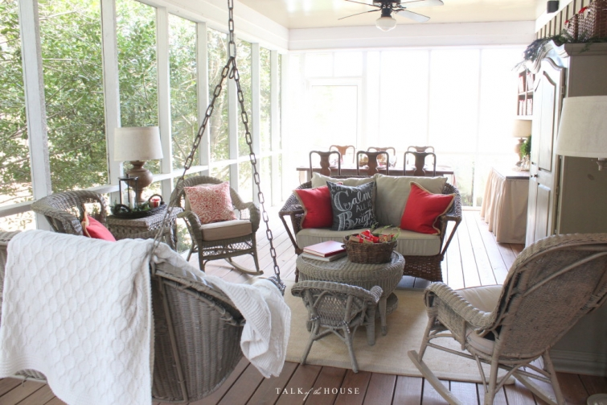
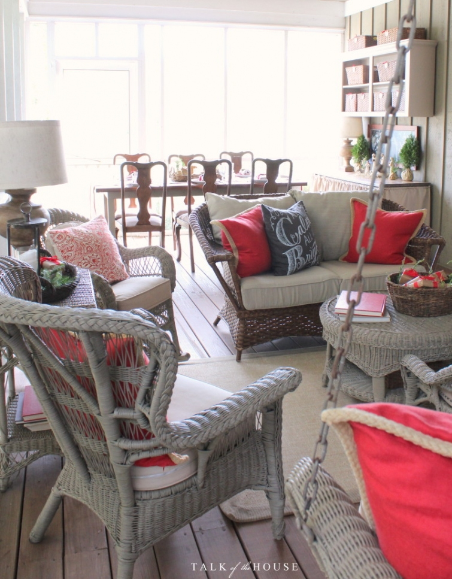

.png)
.PNG)
.PNG)
.PNG)
.PNG)
.PNG)
.JPG)
.JPG)
.PNG)
.PNG)


Merry Christmas! I have a bit more “outdoor” Christmas decorating for you to see today…that is if you can actually call the back porch “outdoors.” 🙂 It too was a nice place to be a week ago with the very mild Georgia fall December weather we were having. But it is now apparently monsoon season here with continuous rain.
Is everything calm and bright around your house? With all our red, we’ve got the bright, and yesterday marked the beginning of the calm. I have 4 gifts left to wrap, and I am calling my to-do list officially finished. I have never ever in my entire life called myself ready early! So this has to be my Christmas miracle (along with having all three of our children home for Christmas. 🙂 )

We had a fun bridal shower here Monday night, (post coming) so between that and the kids coming home, I have had major motivation to finish everything early. No total redesign on the porch. In fact, it was a little simpler than years past – but tweaked to follow the red and black color scheme.
 We normally buy 3 Christmas trees at one time the day after Thanksgiving, but this year I thought it would be smart to just purchase them when I was ready to decorate them. That turned out to be not so smart. When it was time to get the porch tree, all the larger ones were gone from every single store around here. So the porch tree is much smaller and scaled down in its decor. But I like it, so that may be the new direction for future Christmases. 🙂
We normally buy 3 Christmas trees at one time the day after Thanksgiving, but this year I thought it would be smart to just purchase them when I was ready to decorate them. That turned out to be not so smart. When it was time to get the porch tree, all the larger ones were gone from every single store around here. So the porch tree is much smaller and scaled down in its decor. But I like it, so that may be the new direction for future Christmases. 🙂
The green Thanksgiving plates were easily replaced by new red ones, and the magnolia arrangement was replaced by holly and cedar.
The Willow Tree nativity is out on the buffet again, but I changed up the chalkboard to include an appropriate verse from the gospel of Luke.
The table has the other Willow Tree pieces for the centerpiece again.
Those red salad plates are from Homegoods. You know there will be multiple uses for them beyond the Christmas season. 🙂
The napkins are tied up with black and red ribbon, and I had fun lettering different small tags for each place setting.
The weary world rejoices was my favorite. It is soooo easy to become weary at this time of year with our lists of things to do, things to buy, things to cook, and places to be. It can take a tiring toll on you. I know. But do you know what? There are more rooms I could decorate today. There are more treats I could prepare today, but I am stopping. On this cozy rainy day, 2 days before Christmas, I am calling it done.
Our daughter arrived home on Sunday. We picked up our law school son in Atlanta last night, and our oldest arrives in Atlanta from Seattle later this afternoon. We are going to enjoy this short time together without having to run errands or worry about any to-do list items. (But everyone’s laundry will still have to be done. 🙂 LOL) It is a time for joy.
In this often joy-starved weary world, we have to make time for the joy.
I hope to have one more post for you before Friday because there are still some rooms and things I would love for you to see, but if I don’t get one out (because I will be busy playing Monopoly and watching Christmas movies with my kids) my wish for you is a wonderful Christmas filled with joy.
Merry Joyful Christmas!


.PNG)
I just pinned all of those chalkboard ideas. Thank you! Louvina sounds just like my momma! She is saying that very same thing about the seasons. I am so enjoying this weather! I love the black and white thrown in with the red. I did that too this year…I bet you aren’t surprised. I know you have enjoyed having your three children home! Blessings to you, Kelly!
Your blog brought me JOY, Kelly! I have had a weary year. We just relocated in November from PA to TX. I got the same pillow cover from Pottery Barn to remind me that “All is calm, all is bright!” I have opened so many boxes that I shudder at the idea of opening presents. I have been blessed with so much that I need NOTHING. We simplified Christmas in our new home by just decorating with fresh greens and bowls of oranges and pomegranates…with pops of our favorite red everywhere! I have needed the REST from the moving chaos and usual Christmas overload, so we have balanced hours of putting a home back together with walks through new neighborhoods in the twilight to enjoy the lights (and everyone else’s hard work). Judging by the tone and text of her note, I believe I am currently flying to my sister’s, “Wendy in KY,” to celebrate Christmas Day with family. Your blog is my escape on long flights and I always enjoy the peace and sense of balance in everything you do. Thank you for that! Have a blessed day and a wonderful New Year!
——————————————————————–
Dawn, I am sorry to hear that 2015 made you weary , but I am glad that the blog brought you joy. Moving really zaps anyone of energy because it involves a ton of labor, and it is mentally draining to have to start over in some place new. I hope the remainder of your Christmas provided some rest for you. It sounds like your neighborhood walks are wonderful! I hope your 2016 brings renewed strength and many fun times in your new home.
Happy 2016!
Kelly
Merry Christmas, Kelly! Your porch is lovely and I love how you’ve incorporated the Nativity in your own unique way. I look forward each Christmas to displaying my own Nativity set on the fireplace hearth but I love your idea of using it as the centrepiece. I may have to find my own Willow Tree Nativity. Enjoy every moment with your family!
Dear Kelly,, thank you for sharing your home and family with us all year, but especially at Christmas. I know you are terribly busy, and it means so much that you still take the time to post. Your nativity chalk board is my favorite. Wish it was a printable. (Hint, Hint). Merry Christmas to you and your sweet family.
I hope you are knee deep in movies, hot chocolate, and laughter with your family. Thank you for the inspiration. Love the very simple tree. I think it is the most beautiful I have seen in blogland! The shepherds tending their flocks as the centerpiece though has my heart. Wishing you and yours a very blessed Merry Christmas.
Thank you for sharing your porch with us. It would be so nice to sit and enjoy a glass of iced tea before the festivities begin! And yes, iced tea, because here in Tampa Florida we are having a hot, hot Christmas! Merry Christmas Kelly!
I quickly sneaked a peek at your post while at my dr appointment– so calming — so YOU — and just know you are having a wonderful time with your family all being together once again. I will be going back to review and take my time to see/read it all again. Just saw the weather forecast for your area today and praying for safety for you and yours and everyone in its path. This kind of weather makes me think of what the Bible says about the end times– that we won’t be able to recognize the seasons — the weather has been anything but seasonal. My best wishes dear one for a wonderful Christmas and a Blessed New Year to you and ALL the readers of TOTH!
Merry Christmas Kelly! Your home is lovely. Love the garden tool display with the plates. Enjoy your family!
Your home is looking beautiful … as always. I love the “all is calm, all is bright ” cushion. You must have been reading my mind with regard to weary!!! I don’t think I’ve ever felt quite as tired in the run upto Christmas as this year!! Still merry and bright though 🙂
Enjoy Christmas Eve with your family … Relax and enjoy the moments!
Rosemary
You have a knack for using things in such wonderfully creative ways! I just love your centerpiece where you’ve incorporated pieces of your nativity. I also have the Willow Tree, but I’ve never thought of such a lovely way to display it…you continually inspire me!
Enjoy every moment surrounded by your loving family, Kelly! Merry Christmas !!
Lovely indeed, enjoy your family.
Your beautiful home seems to be made especially for the Christmas colors. Lovely!
As always, I love it! Are those red plates Melamine? I found red Melamine ones at TJMaxx this year. I thought Christmas, Valentine’s Day, Fourth of July for starters. Enjoy your family time. Merry Christmas to you and your family!!
MERRY CHRISTMAS KELLY!
Thank you for your inspiration!
Lovingly, Julia
Everything looks beautiful, Kelly. I love all the little details.
Your porch is gorgeous, and oh so colorful! You know I share your love of color. Have a wonderful time with your family and play lots of Monopoly!
Brenda
Merry Christmas, Kelly. Enjoy the kiddos. Your House looks beautiful.
DiAnne
Everything is lovely, Merry Christmas to you and your family! Your blog makes me happy!
I have been working hard to stay focused on Christ’s birth and NOT on the many things that are on my “yet-to-do” list. Taking a moment to raise hands to the sky to proclaim, “Glory to God in the Highest” is far more important than my penchant for making lists (and checking them more than twice.) Joyous Noel to you and your entire family and may your 2016 be filled with God’s richest Blessings.
Everything looks wonderful Kelly. I like the smaller tree with black check adornment. Your smaller wicker settee works out just fine too. This weather is crazy. It was a bake a thon today and I had to open the kitchen window to help me cool down. 🙁 We are at 60 degrees and very soggy from all the rain. I keep thinking it is easier for all the last minute errands not having snow to contend with, but it just doesn’t seem like Christmas without a little of the white stuff. 🙁 Oh, spoken like a Midwesterner! 🙁 I am just finishing wrapping tonight. Christmas eve will be peaceful. My place is already called “saved” on the sectional. Not having to host this year is great. It will be prime rib and heels up on Christmas day. 🙂 Have a great holiday with your family Kelly, now don’t mind me while I go drool over the porch a little longer….
How festive your porch is!! How nice to have a tree out there too. It is beautiful. I love the black and red together. Your hand lettering is always so beautiful. The tags are adorable. I love the way your nativity is displayed also. Your sentiment holds true…it is very easy to become weary this time of year. We have to choose whether to be Mary or Martha. I want to choose what is better. 🙂 Merry Christmas to you Kelly and I hope you have a wonderful time with your family!!
Good for you to call a STOP to this and relax and enjoy your family. Porch is lovely, as is everything at Kelly’s home!
You are always special and inspiring, BUT the nativity is very special. It is very difficult to find small, nicely done nativity scenes in the market today. As each grandchild has married, I have tried to give them a nativity for the first Christmas. Happy holidays!
Kelly,
Thank you for sharing your porch and words of wisdom with us. Some times enough is enough and you just have to stop and slow down to enjoy it. Well said my friend. I wish you guys a very Merry Christmas too. (I’d love to see the tv room and how it is decorated if you have a spare moment to post but if not I understand.) 😉 Take care and have fun with the kids!
Dawn
Have a Merry Christmas!!!
From outside to inside such a lovely and cozy home for the Christmas season. So Kelly, enjoy your family, the fun, the food during this blessed time. Have so enjoyed your posts this year, especially the travel posts, but your Christmas home is a real treat. Merry Christmas to you all.
The Christmas Miracle is that you are no longer working. I look forward to that miracle next year!
Merry Christmas to you and your beautiful family! Your porch is lovely, you are so blessed to have such a gorgeous place to call home.
Good for you Kelly! I resolved a while back that I was going to enjoy the precious time I have with my children, their spouses and the grandchildren. I do all I can before the arrival and then enjoy every second we are together. I’ll have plenty of time to search out stray legos, toy cars and blocks when it’s just Ed and me! And I’ll smile thinking of those little ones playing and having fun.
Kelly,
The room looks wonderful. I love the black and white check ribbon on the tree. Everything looks wonderful and welcoming.
Best to you and your family this season.
xo,
Karen
I love the smaller tree and the serene, yet still cheerful, look you’ve given your porch this year. It feels like an oasis of calm in the midst of the seasonal whirlwind. Calm and cozy. (Whoops, I initially mis-typed that line as “It feels like an oasis of clam…” hahaha!)
When I feel world-weary, I can count on a session of Talk of the House to recharge my soul and brighten my mood. Many thanks for sharing your talent and your joyful soul with us all throughout the year! I doubt you can know the beneficial effect you have on so many of us.
Wishing you and your family a joyful holiday and the blessings of happiness, good health, and prosperity throughout the coming year! Merry Christmas!
So beautiful! Perfect as always Kelly. Thank you for sharing your beautiful home. Merry Christmas!!
I love the “smaller” tree. Looks perfect on the porch. Your home is beautiful. Wishing you and your family a very Merry and Blessed Christmas.
Gorgeous. I love your nativity scenes both are stunning. Merry Christmas
So beautiful and I love how you incorporated the nativity throughout! My willow tree nativity is one of my favorite things to put out for Christmas. I {heart} the tags on the napkins. 🙂 I do agree..things become weary around Christmas with so much to do but we REJOICE in the birth of Jesus, Our Lord. He is the reason for the season. Praying many blessing upon your family, Kelly, as you gather together! Have fun playing those games, watching movies and spending time with your kids. Its the best! Merry CHRISTmas!
Char
I love the smaller porch tree! So pretty! Everything is lovely.
I know you will have a Merry Christmas! Anne
Love your porch…and you know I love the red! I’ve toned down the decor this year a bit…it’s freeing. Enjoy your family this Christmas…we had a full house last year, but not this year….we are two short. The good news is that he’s with his wife and her family…where he should be this year. And thank goodness for Skype! I really hope you have a wonderful Christmas with your family! 😉
So simple, classic and festive! I agree, I’m also “done” except for cooking a few things, which is actually relaxing at this point. Enjoy your family time, and Merry Christmas to you!
What a joy it is to have all your children home for Christmas! I know from experience that as they grow and start their own lives being all together for a holiday is not taken for granted. The merriest of Christmases to you and your family!!
Simply lovely. Merry Christmas Kelly.
It is such a treat to receive notice in my inbox that Kelly has a new post! Love your style Kelly – in decorating as well as your writing. It always feels like a note from a girlfriend! Isn’t it the best having your whole family around you at Christmas! Nothing brings more joy! Merry Christmas!
Just beautiful!!!! So exciting that your children will all be coming in for Christmas!!! Thank you for sharing all your pics… the decorating whirlwind is perfect!!!! lolol…. Here in Florida we should have decorated with sand buckets and sea shells… it will be 80 degrees here today… 🙂 Merry Christmas!!!